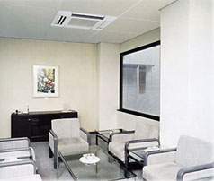
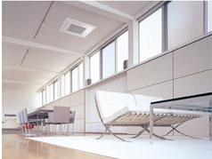

Кондиционер в офис
|
Независимо от деятельности в сфере бизнеса ни одно современное производство, ни один офис не может обойтись без климатической техники – это кондиционеры, очистители и увлажнители воздуха, осушители воздуха и т.д. Любое современное промышленное предприятие или офисное помещение компании в той или иной степени оборудуется кондиционерами, а так же другой климатической техникой. Сотрудники, находящиеся в помещении, просто не смогут работать без создания комфортных условий. При изменении требуемого температурного режима изменится и производительность труда сотрудников.
Необходимо понимать, насколько важное значение имеет установка системы кондиционирования в офисе. Насколько климатические характеристики установленных кондиционеров могут повлиять на внешний вид и атмосферу коллектива. Для оборудования офисных и производственных помещений особым спросом пользуются полупромышленные и промышленные кондиционеры. |
 |
| К полупромышленной серии относятся кондиционеры следующих типов: мультисплит-системы, потолочные сплит-системы, кассетные сплит-системы, канальные и колонные сплит-системы. Самым оптимальным решением «цена-качество» для кондиционирования офисных помещений являются кассетные кондиционеры. Преимущества их заключаются в простоте и удобстве установки, при условии наличия подвесного потолка и запотолочного пространства. Находясь в центральной части помещения внутренний блок кассетного кондиционера обеспечивает равномерное распределение воздушного потока в четырёх направлениях. В зависимости от выбранного оборудования кассетная сплит-система может комплектоваться инфракрасным пультом дистанционного управления или проводным пультом стационарной установки. |
|
Промышленные кондиционеры в основном устанавливаются на предприятиях, заводах, производственных цехах, бизнес-центрах, торговых залах, спортивных комплексах площадью более 250 кв. м. Промышленные кондиционеры способны обеспечивать бесперебойное кондиционирование, охлаждение, обогрев, вентиляцию. Особенности промышленных кондиционеров - это сложность эксплуатации, энергоэффективность, а также высокая стоимость оборудования. Промышленные кондиционеры имеют срок службы от 20 до 30 лет при правильной эксплуатации оборудования.
Кондиционирование воздуха производственных помещений может осуществляться следующими видами промышленных кондиционеров: мультизональными системами, системами чиллер – фанкойл, центральными кондиционерами или крышными кондиционерами. Мультизональные системы – это один и тот же базовый вариант мультисплит- системы, только с большой производительностью наружных блоков. Современная технология распределения хладагента в мультизональных системах и конструкция трассы позволяют достичь расстояния от наружного до внутреннего блока до 250 м, а перепад высот между внутренними блоками до 40 м. Внутренние блоки мультизональной системы могут иметь различную мощность и быть разных типов: настенными, кассетными, канальными, консольные и т.д. Система чиллер - фанкойл имеет следующее отличие от других климатических ситстем: между внутренним и наружным блоком циркулирует вода, а не фреон. Воду охлаждает холодильная машина - чиллер. Центральные промышленные кондиционеры являются автономными кондиционерами. Для их нормального функционирования нужен внешний источник тепла или холода - фреон от внешнего компресорно-конденсаторного блока, холодная вода от чиллера, горячая вода от бойлера или системы центрального отопления. Центральные промышленные кондиционеры выполняют следующие функции: вентиляция, охлаждение, нагрев, очищение и увлажнение воздуха. Крышные кондиционеры – это моноблочные холодильные машины, устанавливаемые на крышах зданий. |  |